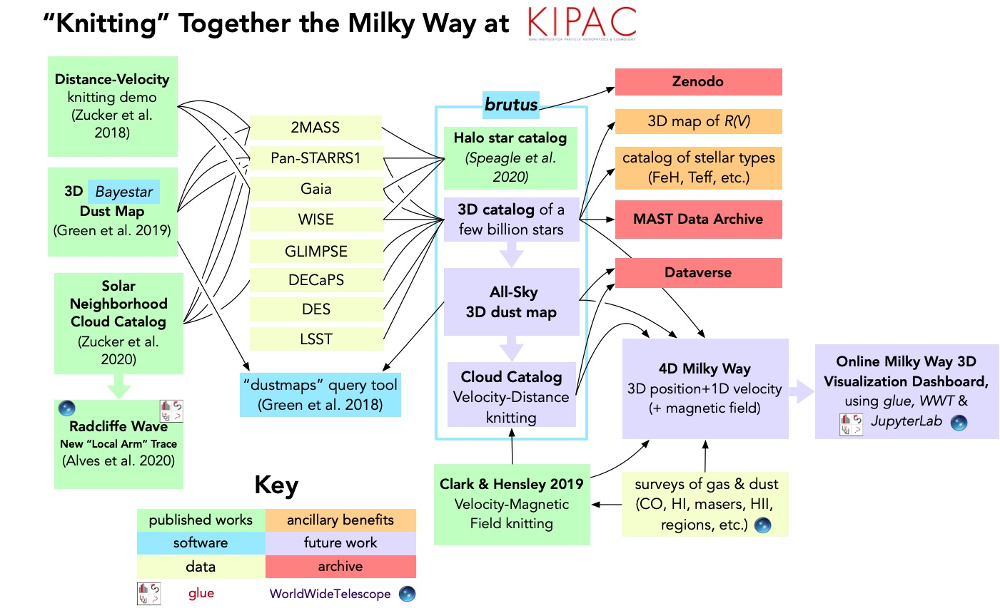

<map name="GraffleExport">
	<area shape=rect coords="350,458,537,492" href="https://lsst.slac.stanford.edu/">
	<area shape=rect coords="350,416,537,450" href="https://www.darkenergysurvey.org/">
	<area shape=rect coords="258,811,371,858" href="http://glueviz.org/">
	<area shape=rect coords="371,812,570,859" href="http://worldwidetelescope.org">
	<area shape=rect coords="862,95,1096,134" href="https://zenodo.org/">
	<area shape=rect coords="862,361,1096,404" href="https://dataverse.org/">
	<area shape=rect coords="871,662,1104,753" href="http://milkyway3d.org/">
	<area shape=rect coords="350,248,537,281" href="https://sci.esa.int/web/gaia">
	<area shape=rect coords="350,376,537,410" href="http://decaps.skymaps.info/">
	<area shape=rect coords="350,335,537,369" href="http://www.astro.wisc.edu/sirtf/">
	<area shape=rect coords="350,205,537,238" href="https://panstarrs.stsci.edu/">
	<area shape=rect coords="350,291,537,325" href="https://www.nasa.gov/mission_pages/WISE/main/index.html">
	<area shape=rect coords="862,281,1096,335" href="https://archive.stsci.edu/access-mast-data">
	<area shape=rect coords="621,178,809,265" href="http://allsky.s3-website.us-east-2.amazonaws.com">
	<area shape=rect coords="76,560,257,685" href="https://sites.google.com/cfa.harvard.edu/radcliffewave/">
	<area shape=rect coords="76,383,257,524" href="https://www.aanda.org/articles/aa/olm/2020/01/aa36145-19/aa36145-19.html">
	<area shape=rect coords="335,522,562,585" href="https://joss.theoj.org/papers/10.21105/joss.00695">
	<area shape=rect coords="608,650,827,764" href="https://ui.adsabs.harvard.edu/link_gateway/2019ApJ...887..136C/doi:10.3847/1538-4357/ab5803">
	<area shape=rect coords="350,161,535,195" href="https://irsa.ipac.caltech.edu/Missions/2mass.html">
	<area shape=rect coords="67,234,248,359" href="http://www.astroexplorer.org/details/apjab5362f14">
	<area shape=rect coords="67,79,248,220" href="http://www.astroexplorer.org/details/apjaae97cf11">
</map>

